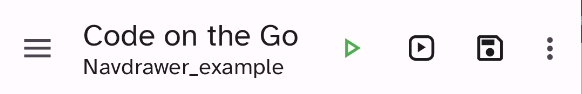
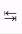
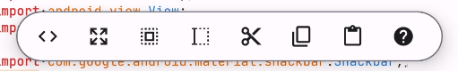
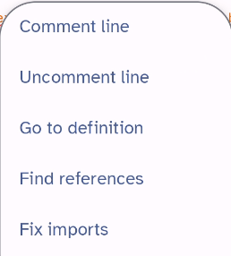
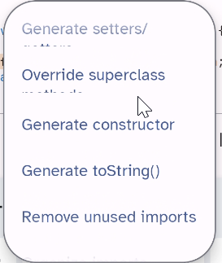
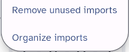

So here's the Sora screen with a lot of stuff on it, and cool callouts. Maybe even hotspot links!
Understand the editor screen
Depending on the size of your screen.
Save command is visible  |
Save command is in the menu |
All the items are: NOTE - THESE ARE ALSO PART OF GENERAL PROJECT INTERFACE
Item |
Icon |
What it does |
|---|---|---|
Display file tree |
||
Undo |
Undo the last action |
|
Quick run |
Builds the program with the default Gradle settings? Red means it's in progress |
|
Run tasks |
Runs the selected Gradle tasks? Also red means the task is in progress |
|
Save |
Save changes to the current file |
|
Find |
|
Search for text in the current file or in the entire project. Results willb e displayed in the Search Results tab in the Output panel. |
Sync project |
?? |
|
Preview Layout |
|
Only available when.... |
Reload color schemes |
|
?? |
Launch app |
|
If you've built and installed the app , the app will launch. |
Work with multiple files
You can have more than one file open at the same time. To open another file, follow these steps:
1.Display the file tree.
2.Locate and tap the file you want to open. The file will be opened in the editor.
3.Repeat steps 1-2 if you want to open more files.
4.To switch between files, tap the file name at the top of the editor window.
Save a file
Reminder: The Save icon looks like this:
To save the file that you're editing, choose one of the following:
•If the Save icon is visible, tap the icon.
•If the Save icon isn't visible, tap the options menu (three dots) and then tap Save.
Close one or more files
To close files, follow these steps:
1.Tap the file name at the top of the editor screen. A menu is displayed.
2.Choose one of the following:
•Close this: Closes the current file and keeps all others open. (If only one file is open, it will be closed.)
•Close others: Close all other files and keep the current file open.
•Close all: Close all open files and return to the top project page.
3.If the file has unsaved changes, a prompt to save the file will be displayed.
•To save the changes, tap Yes.
•To abandon the changes, tap No.
The file or files will be closed.
Coding shortcut keys
To insert this... |
Tap this |
|---|---|
One tab (see Editor preferences to set tab size) If placed before text, the text is indented. When you press return, the next line begins at the same level of indentation |
 |
Paired curly brackets with the cursor between them { } |
{ |
Closing curly bracket } |
} |
Paired parentheses with the cursor between them ( ) |
( |
Closing parenthesis ) |
) |
Equal sign = |
= |
Paired double quotes with the cursor between them " " |
" |
Paired single quotes with the cursor between them ' ' |
' |
Pipe | |
| |
Ampersand (and sign) & |
& |
Autocomplete features
If you yada... and predictive synct
The floating toolbar
To show, long-press anywhere in the editor window.

Item |
What it does |
|
|---|---|---|
Code actions |
Displays menu for common code actions •Comment line: Comments the current line •Uncomment line: Removes comments from the current line •Go to definition: Display location where selected item is defined •Find references - Display all references to the selected item in the Search results panel. Tap a result to go to that line of code. •Fix imports - identify and fix unresolved class names •Generate setters/getters - Setters and getters allow an object to contain private variables that can be accessed and changed with restrictions. Learn more. •Override superclass methods - The subclass can override a method defined in its parent class. Learn more. •Generate constructor - Creates a constructor for you that usually accepts parameters corresponding to the fields of the class and initializes those fields with the provided values. •Generate toString() - Return a string representation of an object. Learn more. •Remove unused imports •Organize imports - puts them in alphabetical order |
|
Expand selection - OK WE NEED A SECTION JUST ABOUT SELECTING STUFF |
Expand the selection to include the next largest logical block.
|
|
Select all |
Selects all text in the file |
|
Begin long select |
Sets a starting point for the selection, drag one of the selection ends to the desired locations |
|
Copy |
Copies the selected text |
|
Paste |
Pastes the selected text at the desired location |
|
Help |
View available help for the selected item |
Code actions (Java only)
To display Code actions menu, follow these steps:
1.Long-press an item in the editor. The floating toolbar is displayed.
2.Tap the Code actions button (< >). A scrollable menu with available code actions is displayed.
Here's a table:
Action |
How to use it |
Comment line |
Comments are human-readable text inside a source code file. Comments are frequently used to explain code to other people who may review, revise, or troubleshoot an app. In Java and Kotlin, an inline comment is preceded by the characters //. To automatically mark the selected lines as comments: 1.Select and long-press the line or lines to comment, then tap the Code actions button. 2.Tap Comment line. The selected line or lines will be commented. You can manually add comments by typing // before text. Learn about types of comments To Comments the currently selected line (adds // before text). Commenting a line removes in |
Uncomment line |
Removes inline comments from the current line (removes //) |
Go to definition |
Moves the cursor to the location in the file where the selected class(?) is defined. 1.Select and long-press the class, then tap the Code actions button. 2.Tap Go to definition. •If the class is defined in the file, the location where it's defined is displayed. •If the class is not defined in the file, an error message will be displayed. |
Find references |
Does something on the whole file? |
Fix imports |
Ensures that all import statement refer to classes and packages that exist? |
Generate setters/getters |
|
All about comments goes somewhere
Block comments
Inline comments

Get help
If you're using Java, you can:
Long-press this... |
Tap this |
|---|---|
Class name |
|
Package name |
|
Module name |
|
Keyword |
|
|
|
|
|
|
|
|
|
|
|
|